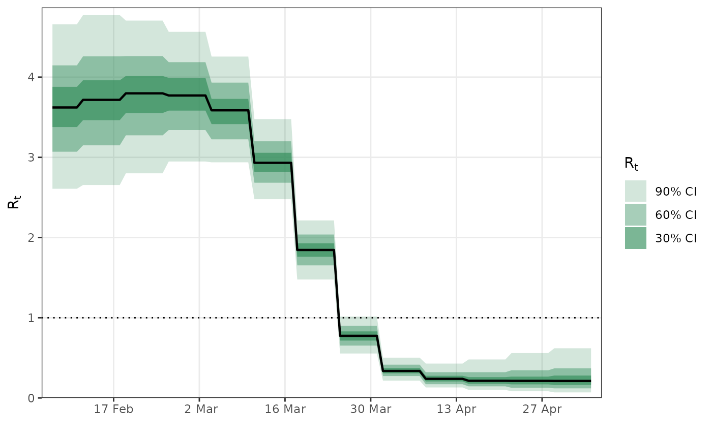
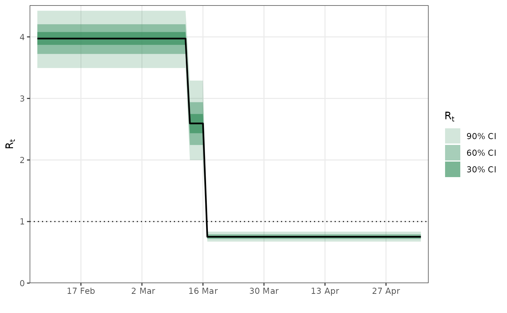
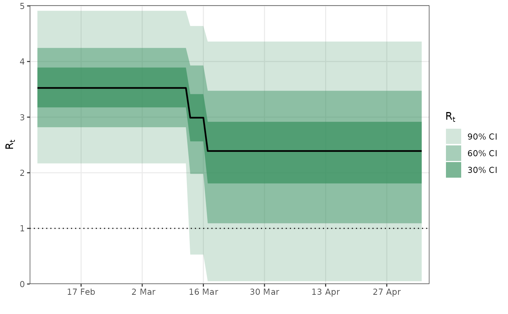

epirt defines a model for reproduction rates. For more
details on the model assumptions, please read the model description
vignette.
An object of class formula which determines the linear predictor for
the reproduction rates. The left hand side must take the form R(group, date), where group and date variables.
group must be a factor vector indicating group membership (i.e. country, state, age cohort), and date must be a vector of class Date.
This is syntactic sugar for the reproduction number in the given group at the given date.
The link function. This must be either "identity", "log", or a call
to scaled_logit.
If TRUE then the covariates for the regression
are centered to have mean zero. All of the priors are then interpreted as
prior on the centered covariates. Defaults to FALSE.
Same as in rstanarm's stan_glm, using the prior constructors documented in priors. In addition to the
rstanarm provided priors,
a shifted_gamma can be used. Note: If
autoscale=TRUE in the call to the prior distribution then
automatic rescaling of the prior may take place.
Same as in rstanarm's stan_glm, using the prior constructors documented in priors. Prior for
the regression intercept (if it exists).
Same as in rstanarm's stan_glmer, using decov. Only
used if the formula argument specifies random effects.
Additional arguments for model.frame
An object of class epirt.
epirt has a formula argument which defines the linear predictor, an argument link defining the link function,
and additional arguments to specify priors on parameters making up the linear predictor.
A general R formula gives a symbolic description of a model. It takes the form y ~ model, where y is the response
and model is a collection of terms separated by the + operator. model fully defines a linear predictor used to predict y.
In this case, the “response” being modeled are reproduction numbers which are unobserved.
epirt therefore requires that the left hand side of the formula takes the form R(group, date),
where group and date refer to variables representing the region and date respectively.
The right hand side can consist of fixed effects, random effects, and autocorrelation terms.
# Fitting requires an external CmdStan install (cmdstanr::install_cmdstan()).
# \donttest{
library(epidemia)
library(ggplot2)
data("EuropeCovid")
options(mc.cores = parallel::detectCores())
data <- EuropeCovid$data
data$week <- lubridate::week(data$date)
# collect arguments for epim
args <- list(
inf = epiinf(gen = EuropeCovid$si),
obs = epiobs(deaths ~ 1, i2o = EuropeCovid$inf2death, link = scaled_logit(0.02)),
data = data,
algorithm = "fullrank", # For speed - should generally use "sampling"
iter = 2e4,
group_subset = "France",
seed = 12345,
refresh = 0
)
# a simple random walk model for R
args$rt <- epirt(
formula = R(country, date) ~ rw(time = week),
link = scaled_logit(7)
)
fm1 <- do.call(epim, args)
#> ------------------------------------------------------------
#> EXPERIMENTAL ALGORITHM:
#> This procedure has not been thoroughly tested and may be unstable
#> or buggy. The interface is subject to change.
#> ------------------------------------------------------------
#> Gradient evaluation took 0.000237 seconds
#> 1000 transitions using 10 leapfrog steps per transition would take 2.37 seconds.
#> Adjust your expectations accordingly!
#> Begin eta adaptation.
#> Iteration: 1 / 250 [ 0%] (Adaptation)
#> Iteration: 50 / 250 [ 20%] (Adaptation)
#> Iteration: 100 / 250 [ 40%] (Adaptation)
#> Iteration: 150 / 250 [ 60%] (Adaptation)
#> Iteration: 200 / 250 [ 80%] (Adaptation)
#> Iteration: 250 / 250 [100%] (Adaptation)
#> Success! Found best value [eta = 0.1].
#> Begin stochastic gradient ascent.
#> iter ELBO delta_ELBO_mean delta_ELBO_med notes
#> 100 -3034.762 1.000 1.000
#> 200 -2045.348 0.742 1.000
#> 300 -1718.942 0.558 0.484
#> 400 -1042.493 0.581 0.649
#> 500 -845.506 0.511 0.484
#> 600 -710.121 0.458 0.484
#> 700 -565.745 0.429 0.255
#> 800 -521.625 0.386 0.255
#> 900 -487.315 0.351 0.233
#> 1000 -471.426 0.319 0.233
#> 1100 -454.132 0.293 0.191
#> 1200 -453.752 0.269 0.191
#> 1300 -450.601 0.249 0.190
#> 1400 -443.832 0.232 0.190
#> 1500 -438.220 0.218 0.085
#> 1600 -427.836 0.206 0.085
#> 1700 -422.863 0.194 0.070
#> 1800 -426.517 0.184 0.070
#> 1900 -417.710 0.175 0.038
#> 2000 -414.049 0.167 0.038
#> 2100 -414.873 0.117 0.034
#> 2200 -407.708 0.094 0.024
#> 2300 -413.224 0.085 0.021
#> 2400 -404.110 0.054 0.021
#> 2500 -403.382 0.042 0.018
#> 2600 -407.294 0.033 0.015
#> 2700 -401.340 0.021 0.015
#> 2800 -399.679 0.017 0.013
#> 2900 -402.406 0.014 0.013
#> 3000 -400.061 0.012 0.012
#> 3100 -397.518 0.011 0.010 MEDIAN ELBO CONVERGED
#> Drawing a sample of size 1000 from the approximate posterior...
#> COMPLETED.
#> Finished in 0.5 seconds.
plot_rt(fm1) + theme_bw()
#> Running standalone generated quantities after 1 MCMC chain...
#>
#> Chain 1 finished in 0.0 seconds.

# Modeling effects of NPIs
args$rt <- epirt(
formula = R(country, date) ~ 1 + lockdown + public_events,
link = scaled_logit(7)
)
fm2 <- do.call(epim, args)
#> ------------------------------------------------------------
#> EXPERIMENTAL ALGORITHM:
#> This procedure has not been thoroughly tested and may be unstable
#> or buggy. The interface is subject to change.
#> ------------------------------------------------------------
#> Gradient evaluation took 0.000245 seconds
#> 1000 transitions using 10 leapfrog steps per transition would take 2.45 seconds.
#> Adjust your expectations accordingly!
#> Begin eta adaptation.
#> Iteration: 1 / 250 [ 0%] (Adaptation)
#> Iteration: 50 / 250 [ 20%] (Adaptation)
#> Iteration: 100 / 250 [ 40%] (Adaptation)
#> Iteration: 150 / 250 [ 60%] (Adaptation)
#> Iteration: 200 / 250 [ 80%] (Adaptation)
#> Iteration: 250 / 250 [100%] (Adaptation)
#> Success! Found best value [eta = 0.1].
#> Begin stochastic gradient ascent.
#> iter ELBO delta_ELBO_mean delta_ELBO_med notes
#> 100 -1045.316 1.000 1.000
#> 200 -574.019 0.911 1.000
#> 300 -476.986 0.675 0.821
#> 400 -449.895 0.521 0.821
#> 500 -441.720 0.421 0.203
#> 600 -439.792 0.351 0.203
#> 700 -427.181 0.305 0.060
#> 800 -426.596 0.267 0.060
#> 900 -423.739 0.238 0.030
#> 1000 -420.917 0.215 0.030
#> 1100 -417.763 0.196 0.019
#> 1200 -411.518 0.181 0.019
#> 1300 -413.787 0.168 0.015
#> 1400 -410.454 0.156 0.015
#> 1500 -409.912 0.146 0.008 MEDIAN ELBO CONVERGED
#> Drawing a sample of size 1000 from the approximate posterior...
#> COMPLETED.
#> Finished in 0.4 seconds.
plot_rt(fm2) + theme_bw()
#> Running standalone generated quantities after 1 MCMC chain...
#>
#> Chain 1 finished in 0.0 seconds.

# shifted gamma prior for NPI effects
args$rt <- epirt(
formula = R(country, date) ~ 1 + lockdown + public_events,
link = scaled_logit(7),
prior = shifted_gamma(shape = 1/2, scale = 1, shift = log(1.05)/2)
)
# How does the implied prior look?
args$prior_PD <- TRUE
fm3 <- do.call(epim, args)
#> ------------------------------------------------------------
#> EXPERIMENTAL ALGORITHM:
#> This procedure has not been thoroughly tested and may be unstable
#> or buggy. The interface is subject to change.
#> ------------------------------------------------------------
#> Gradient evaluation took 0.000217 seconds
#> 1000 transitions using 10 leapfrog steps per transition would take 2.17 seconds.
#> Adjust your expectations accordingly!
#> Begin eta adaptation.
#> Iteration: 1 / 250 [ 0%] (Adaptation)
#> Iteration: 50 / 250 [ 20%] (Adaptation)
#> Iteration: 100 / 250 [ 40%] (Adaptation)
#> Iteration: 150 / 250 [ 60%] (Adaptation)
#> Iteration: 200 / 250 [ 80%] (Adaptation)
#> Iteration: 250 / 250 [100%] (Adaptation)
#> Success! Found best value [eta = 0.1].
#> Begin stochastic gradient ascent.
#> iter ELBO delta_ELBO_mean delta_ELBO_med notes
#> 100 -2.201 1.000 1.000
#> 200 -1.736 0.634 1.000
#> 300 -1.739 0.423 0.267
#> 400 -2.254 0.374 0.267
#> 500 -1.515 0.397 0.267
#> 600 -1.716 0.350 0.267
#> 700 -1.854 0.311 0.228
#> 800 -1.802 0.276 0.228
#> 900 -1.629 0.257 0.117
#> 1000 -1.755 0.238 0.117
#> 1100 -1.955 0.226 0.106
#> 1200 -1.639 0.223 0.117
#> 1300 -2.160 0.225 0.117
#> 1400 -1.339 0.252 0.193
#> 1500 -2.281 0.263 0.193
#> 1600 -1.899 0.259 0.202
#> 1700 -1.644 0.253 0.193
#> 1800 -2.242 0.254 0.202
#> 1900 -1.142 0.291 0.202
#> 2000 -1.236 0.280 0.202
#> 2100 -1.244 0.231 0.193
#> 2200 -1.490 0.226 0.166
#> 2300 -1.543 0.227 0.166
#> 2400 -1.334 0.224 0.157
#> 2500 -1.379 0.201 0.155
#> 2600 -1.561 0.201 0.155
#> 2700 -1.508 0.199 0.155
#> 2800 -1.204 0.210 0.157
#> 2900 -1.887 0.223 0.166
#> 3000 -1.327 0.240 0.193
#> 3100 -1.446 0.239 0.193
#> 3200 -1.703 0.237 0.166
#> 3300 -1.634 0.227 0.157
#> 3400 -1.119 0.220 0.157
#> 3500 -1.512 0.212 0.157
#> 3600 -1.372 0.207 0.155
#> 3700 -1.196 0.207 0.151
#> 3800 -1.163 0.195 0.147
#> 3900 -1.441 0.156 0.147
#> 4000 -1.526 0.155 0.147
#> 4100 -1.332 0.162 0.147
#> 4200 -1.676 0.164 0.147
#> 4300 -1.046 0.193 0.151
#> 4400 -1.649 0.203 0.151
#> 4500 -2.064 0.212 0.193
#> 4600 -1.613 0.220 0.201
#> 4700 -1.071 0.243 0.205
#> 4800 -1.776 0.250 0.205
#> 4900 -1.305 0.250 0.205
#> 5000 -1.031 0.243 0.205
#> 5100 -1.166 0.244 0.205
#> 5200 -1.437 0.246 0.205
#> 5300 -2.054 0.259 0.260
#> 5400 -1.174 0.274 0.260
#> 5500 -1.417 0.269 0.205
#> 5600 -2.874 0.289 0.265
#> 5700 -2.143 0.299 0.280
#> 5800 -2.553 0.306 0.280
#> 5900 -1.143 0.358 0.301
#> 6000 -1.262 0.360 0.301
#> 6100 -1.558 0.362 0.301
#> 6200 -1.475 0.354 0.301
#> 6300 -1.131 0.339 0.301
#> 6400 -2.065 0.344 0.301
#> 6500 -1.219 0.368 0.304
#> 6600 -1.607 0.367 0.304
#> 6700 -1.880 0.348 0.301
#> 6800 -1.202 0.357 0.301
#> 6900 -1.028 0.347 0.265
#> 7000 -1.938 0.357 0.301
#> 7100 -1.123 0.388 0.304
#> 7200 -4.786 0.417 0.341
#> 7300 -1.343 0.530 0.453 MAY BE DIVERGING... INSPECT ELBO
#> 7400 -1.061 0.506 0.341 MAY BE DIVERGING... INSPECT ELBO
#> 7500 -1.516 0.512 0.341 MAY BE DIVERGING... INSPECT ELBO
#> 7600 -1.525 0.487 0.304
#> 7700 -1.053 0.493 0.304
#> 7800 -1.789 0.505 0.411 MAY BE DIVERGING... INSPECT ELBO
#> 7900 -1.677 0.447 0.304
#> 8000 -1.284 0.457 0.306
#> 8100 -1.824 0.463 0.306
#> 8200 -1.545 0.469 0.306
#> 8300 -1.153 0.471 0.340
#> 8400 -1.940 0.468 0.340
#> 8500 -1.753 0.439 0.306
#> 8600 -1.306 0.444 0.340
#> 8700 -1.232 0.440 0.340
#> 8800 -1.576 0.422 0.306
#> 8900 -1.413 0.420 0.306
#> 9000 -1.276 0.402 0.300
#> 9100 -2.919 0.393 0.300
#> 9200 -1.516 0.401 0.300
#> 9300 -2.024 0.286 0.296
#> 9400 -1.823 0.278 0.296
#> 9500 -1.574 0.271 0.251
#> 9600 -1.386 0.277 0.251
#> 9700 -1.773 0.266 0.219
#> 9800 -0.834 0.302 0.219
#> 9900 -1.253 0.315 0.251
#> 10000 -1.686 0.313 0.251
#> 10100 -1.760 0.300 0.219
#> 10200 -1.639 0.295 0.219
#> 10300 -1.587 0.279 0.218
#> 10400 -1.585 0.259 0.158
#> 10500 -1.481 0.257 0.158
#> 10600 -1.344 0.245 0.136
#> 10700 -2.359 0.264 0.158
#> 10800 -1.115 0.309 0.158
#> 10900 -1.776 0.321 0.219
#> 11000 -1.342 0.332 0.251
#> 11100 -1.270 0.307 0.219
#> 11200 -1.298 0.262 0.158
#> 11300 -1.044 0.261 0.158
#> 11400 -1.277 0.265 0.182
#> 11500 -2.125 0.277 0.219
#> 11600 -1.705 0.282 0.243
#> 11700 -1.625 0.274 0.243
#> 11800 -1.140 0.239 0.243
#> 11900 -1.712 0.239 0.243
#> 12000 -2.191 0.237 0.219
#> 12100 -1.783 0.246 0.229
#> 12200 -0.980 0.284 0.243
#> 12300 -1.573 0.301 0.246
#> 12400 -1.617 0.302 0.246
#> 12500 -1.374 0.307 0.246
#> 12600 -1.916 0.316 0.283
#> 12700 -1.486 0.309 0.283
#> 12800 -1.397 0.257 0.246
#> 12900 -2.238 0.257 0.246
#> 13000 -1.224 0.282 0.246
#> 13100 -1.419 0.286 0.246
#> 13200 -1.523 0.289 0.246
#> 13300 -2.193 0.292 0.283
#> 13400 -1.546 0.304 0.289
#> 13500 -1.851 0.292 0.283
#> 13600 -1.506 0.291 0.283
#> 13700 -1.582 0.291 0.283
#> 13800 -2.565 0.289 0.283
#> 13900 -1.567 0.304 0.283
#> 14000 -0.882 0.332 0.289
#> 14100 -1.765 0.345 0.306
#> 14200 -1.211 0.327 0.306
#> 14300 -1.013 0.318 0.289
#> 14400 -1.261 0.327 0.289
#> 14500 -1.885 0.334 0.306
#> 14600 -1.734 0.325 0.306
#> 14700 -1.367 0.324 0.306
#> 14800 -2.422 0.342 0.331
#> 14900 -2.074 0.332 0.306
#> 15000 -1.073 0.337 0.306
#> 15100 -1.736 0.349 0.331
#> 15200 -1.632 0.349 0.331
#> 15300 -1.547 0.337 0.331
#> 15400 -1.320 0.324 0.268
#> 15500 -2.014 0.333 0.331
#> 15600 -3.211 0.340 0.345
#> 15700 -1.770 0.379 0.373
#> 15800 -1.390 0.373 0.345
#> 15900 -1.304 0.345 0.331
#> 16000 -0.771 0.341 0.331
#> 16100 -1.176 0.333 0.331
#> 16200 -2.047 0.331 0.331
#> 16300 -1.113 0.363 0.345
#> 16400 -1.229 0.358 0.345
#> 16500 -1.473 0.350 0.345
#> 16600 -1.771 0.354 0.345
#> 16700 -1.315 0.358 0.345
#> 16800 -1.553 0.344 0.345
#> 16900 -1.308 0.345 0.345
#> 17000 -1.713 0.310 0.273
#> 17100 -1.865 0.295 0.237
#> 17200 -1.552 0.302 0.237
#> 17300 -1.737 0.304 0.237
#> 17400 -1.577 0.301 0.237
#> 17500 -1.213 0.299 0.237
#> 17600 -1.190 0.281 0.201
#> 17700 -1.540 0.252 0.201
#> 17800 -1.514 0.239 0.187
#> 17900 -1.450 0.238 0.187
#> 18000 -1.232 0.212 0.177
#> 18100 -1.146 0.198 0.168
#> 18200 -1.273 0.182 0.166
#> 18300 -1.736 0.153 0.166
#> 18400 -1.630 0.152 0.166
#> 18500 -1.437 0.150 0.153
#> 18600 -1.566 0.146 0.135
#> 18700 -1.352 0.137 0.135
#> 18800 -1.029 0.145 0.135
#> 18900 -1.105 0.139 0.107
#> 19000 -0.868 0.141 0.107
#> 19100 -1.444 0.157 0.135
#> 19200 -1.572 0.151 0.107
#> 19300 -2.132 0.158 0.135
#> 19400 -2.181 0.154 0.135
#> 19500 -1.332 0.171 0.135
#> 19600 -1.317 0.171 0.135
#> 19700 -1.648 0.170 0.135
#> 19800 -1.606 0.170 0.135
#> 19900 -1.153 0.188 0.159
#> 20000 -1.573 0.192 0.159
#> Informational Message: The maximum number of iterations is reached! The algorithm may not have converged.
#> This variational approximation is not guaranteed to be meaningful.
#> Drawing a sample of size 1000 from the approximate posterior...
#> COMPLETED.
#> Finished in 1.3 seconds.
plot_rt(fm3) + theme_bw()
#> Running standalone generated quantities after 1 MCMC chain...
#>
#> Chain 1 finished in 0.0 seconds.

# }